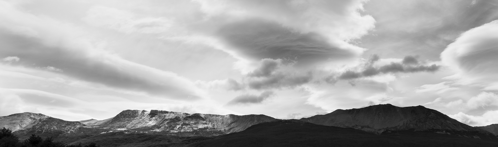
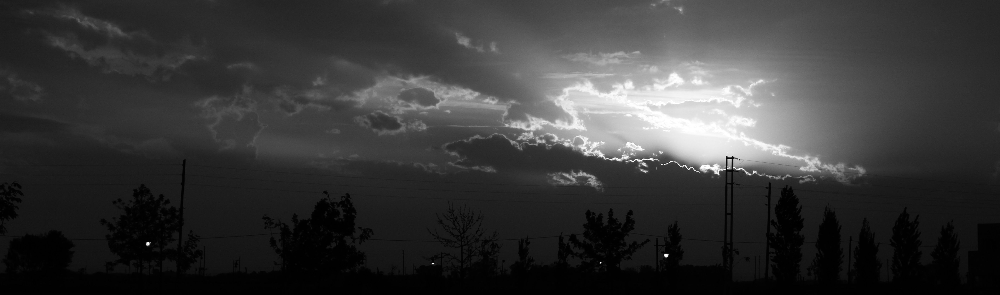
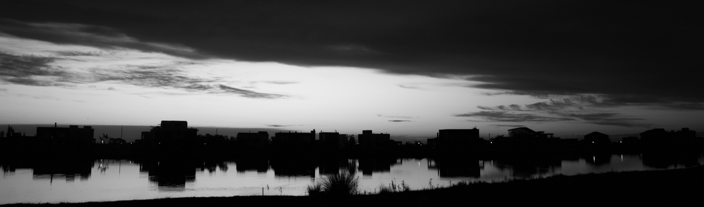

LUNA ZALAZAR

Nací en Buenos Aires, Argentina.
Vivo con mi pareja y mis tres gatas hace un año y medio.
-
Trabajo en relación de dependencia de manera part-time, y en mis tiempos libres me encanta ver series y documentales.
Soy muy observadora y detallista, también inquieta, me gusta todo el tiempo estar haciendo algo distinto y aprender cosas nuevas para superarme día a día.
Me encanta conocer lugares nuevos y me adapto rápido a los entornos que me rodean.
Fortalezas
Amable
Capacidad de realizar múltiples tareas
Honesta
Resolución de problemas con rapidez
Enfocada
Buen rendimiento bajo presión
Puntual
Alta capacidad de adaptación a distintos entornos

Educación
Universidad Nacional de la Matanza, 2019-Actualidad. Tecnicatura en Desarrollo Web
Universidad de Palermo, 2015-2018. Diseñadora Fotográfica
Instituto Padre Elizalde, 2009-2014. Bachiller en Ciencias Naturales

Experiencia previa
Crew Líder en Wendy's, 2017-Actualidad.
Encargada de turno tanto en el sector de cafetería como de la cocina. Diagramación de horarios quincenales.
Trabajos fotográficos de manera freelance en estudio y exteriores.
He realizado producciones fotográficas en estudio, en interiores para entidades como el Ministerio de Salud en el año 2016, y books fotográficos en exteriores, además de fotografía de paisajes y arquitectura.
Hobbies
Pasar tiempo con mis gatas
Practicar pilates
Caminar y conocer nuevos lugares
Escuchar música
Estar con mi familia
Aprender cosas nuevas
Idiomas
Aprendí el idioma inglés de manera autodidacta, por lo cual puedo entender el idioma y escribirlo con mayor facilidad que hablarlo, aunque puedo hacerlo sin dificultades.